In the delivery order form view, there are two buttons "Quality Alerts" and "Quality Check", in operation lines you can see alert and check status, also see the global alert warning label on form top.
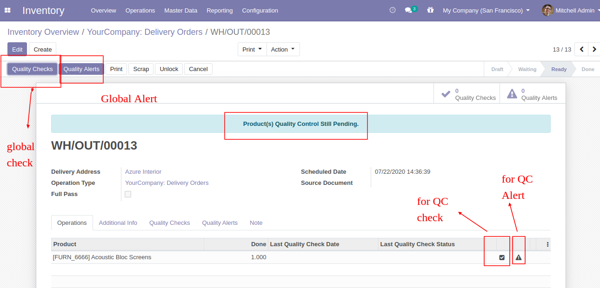
While clicking on "Quality Check" and check type "Text Only", In the wizard you have to add text and click Pass or Fail.
If Pass, Then that line will glow green and status is a pass.
If in line more than one products and some products pending for QC than status is "Partially Passed QC"
While clicking on "Quality Check" and check type "Measurement", In the wizard you have to add measurement in define criteria and click validate.
If enter measurement does not match criteria then it will popup this message where you have to select, If enter measurement is correct then click 'Confirm Measure' else click 'Correct Measure' and it will redirect to you on the previous popup.
If Quality Check Type "Pass or Fail", Then responsible person has to click only pass or fail button.
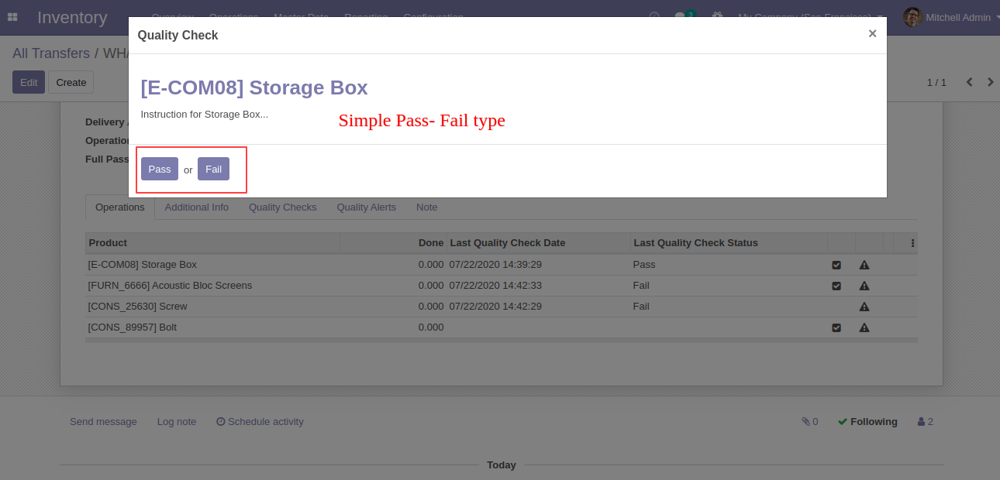
Quality Check Type "Take a Picture", Than responsible person has to add pictures of products.
Here users have two buttons for 'Quality Alert' one for global alert and the second for the individual alert.
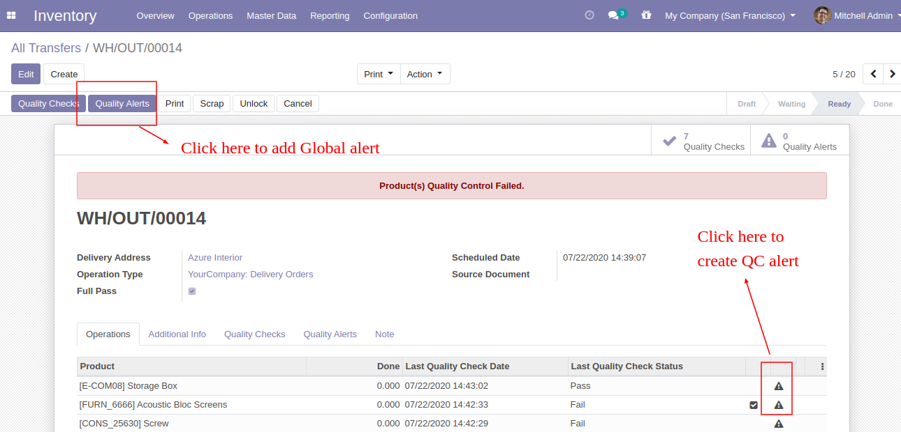
This is global 'Quality Alert' popup. Where you can see a list of all products and names of the responsive team, person, and priority.
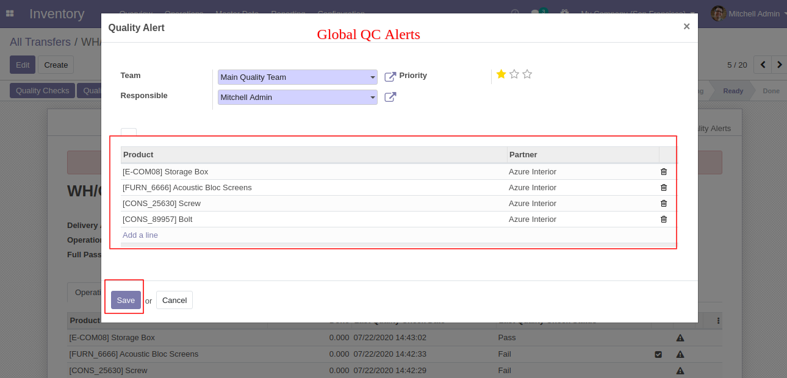
This is global 'Quality Alert' popup. Where you can see a list of all products and names of the responsive team, person, and priority.
In picking form view there is also a smart button for 'Quality Check' and 'Quality Alert' with the counter.
'Pending QC' Menu and Tree View.
'Failed QC' Menu and Tree View.
'Partially QC' Menu and Tree View.
'Passed QC' Menu and Tree View.
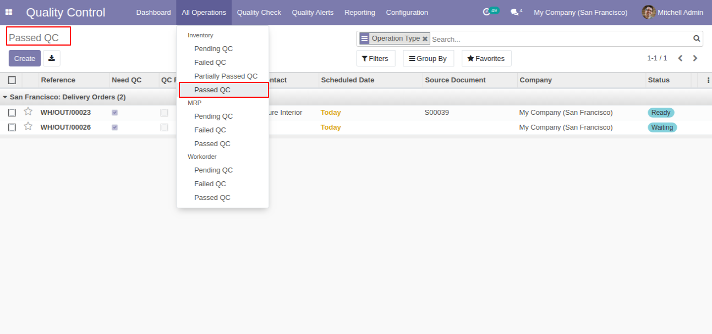
'Quality Check' Menu and Tree View.
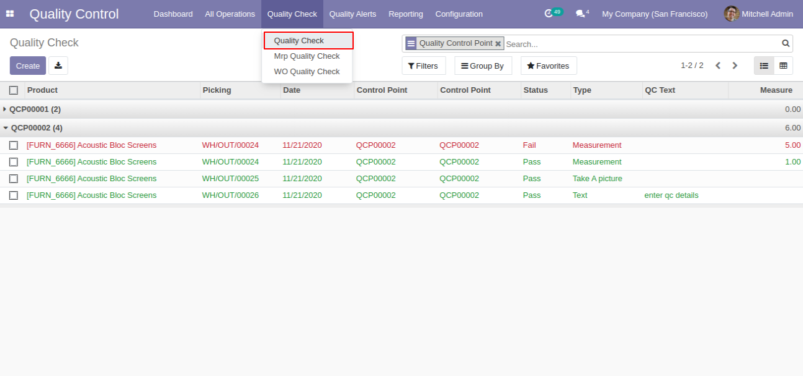
'Quality Check' Form View.
'Quality Alerts' Menu and Tree View.
'Quality Alert' Form View
'Quality Check' Analysis Report View.
'Quality Alert' Analysis Report View.
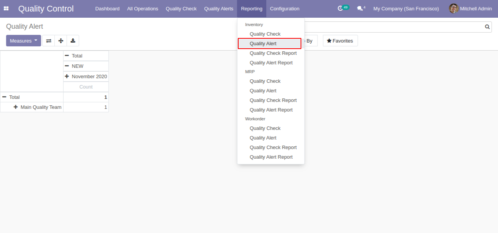
'Quality Check Report' here you can download QC report in pdf.
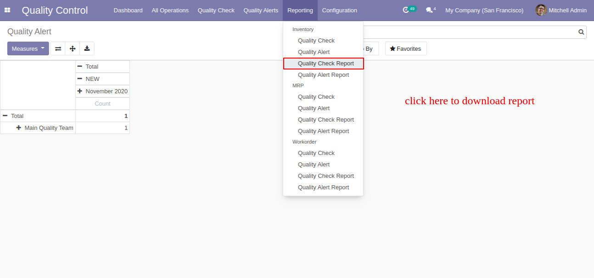
After click on the 'Quality Check Report,' this popup window appears. Where you can customize reports like start and end date, product wise, group by, and status also.
'Quality Check Report' group by 'Picking Type'.
Select 'Product' in the group by.
'Quality Check Report' group by 'Product'.
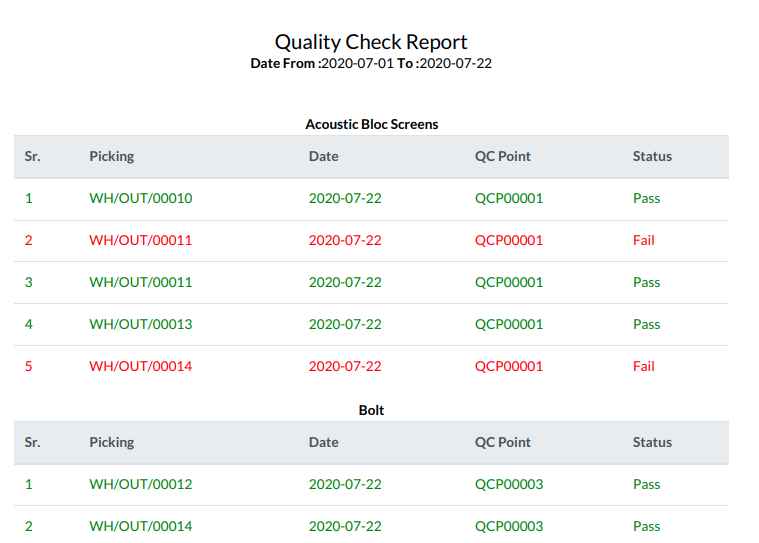
In wizard only select status 'Both'.
'Quality Check Report' for all products with both status.
'Quality Alert Report' by-product and responsible person with the stage.
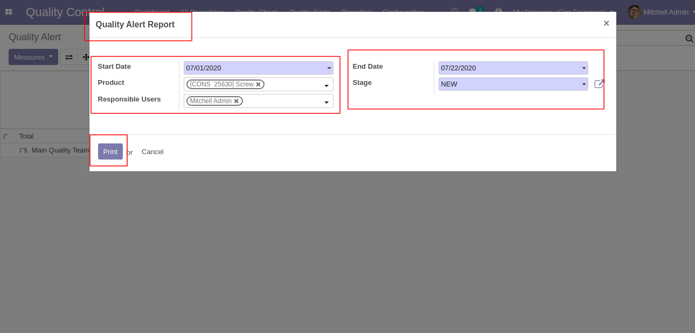
'Quality Alert Report' PDF report looks like below.
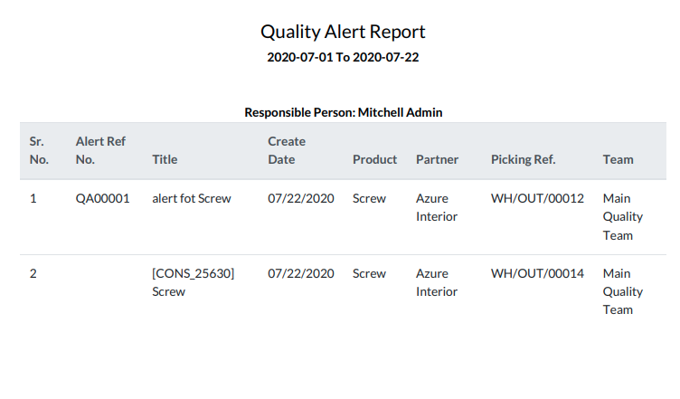